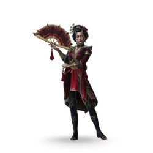
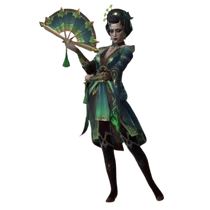
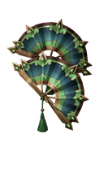
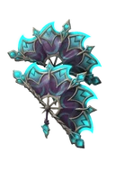

Вдова

Редкость: Epic
Пол: Female
Фракция: Dynasty
Энергия: Shadow
Класс: Normal
Добыча: Rift Keys and Chests
| Название | Редкость | Изображение |
|---|---|---|
| Демон Любви | Обычный |  |
| Ведьма Горестных Слез | Редкий |  |
| Название | Редкость | Изображение |
|---|---|---|
| Крылья Совершенства | Обычный | |
| Зачаровывающий обряд | Обычный |  |
| Безжалостный Резонанс | Эпический |  |
| Название | Описание | Изображение |
|---|---|---|
| Одержимость | Вдова зачаровывает большую часть здоровья противника. | |
| Преданность | Часть здоровья противника всегда зачарована. | |
| Злобная любовь | Чем больше зачарованного здоровья у противника, тем больше физического урона наносит Вдова. | |
| Жертвоприношение Наслаждение | Уничтожение зачарованного здоровья с помощью Теневой способности восстановит часть здоровья Вдовы. | |
| Жажда внимания | Восстановление здоровья противника сокращает время восстановления «Сангвинического шелка». | |
| Дар цели | Восстановление здоровья противника дает Вдове теневую энергию. | |
| Удовольствие | У Sanguine Silk два заряда. | |
| Боль | Каждая атака под действием Демонической интуиции навсегда снижает максимальный запас здоровья противника. | |
| Поцелуй вдовы | Вместо восстановления здоровья, Вдова уничтожает все зачарованное здоровье противника при успешном использовании Кровавого шелка в теневой форме. | |
| Финальный ритуал | Получив смертельный урон, Вдова призывает силу своего культа, восстанавливая часть здоровья себе и противнику. | |
| Судьба обмана | У героев вашей команды сокращено время восстановления дальних атак. |  |
| Судьба Веры | Все эффекты исцеления восстанавливают больше здоровья героям в вашей команде. |  |